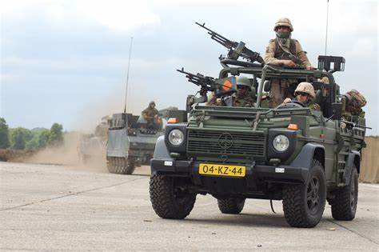
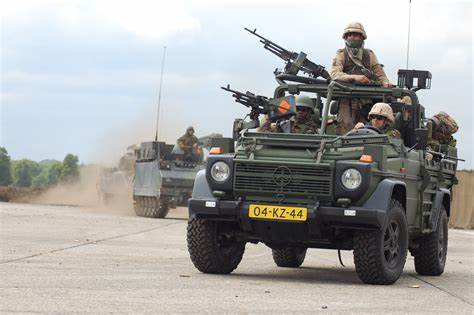
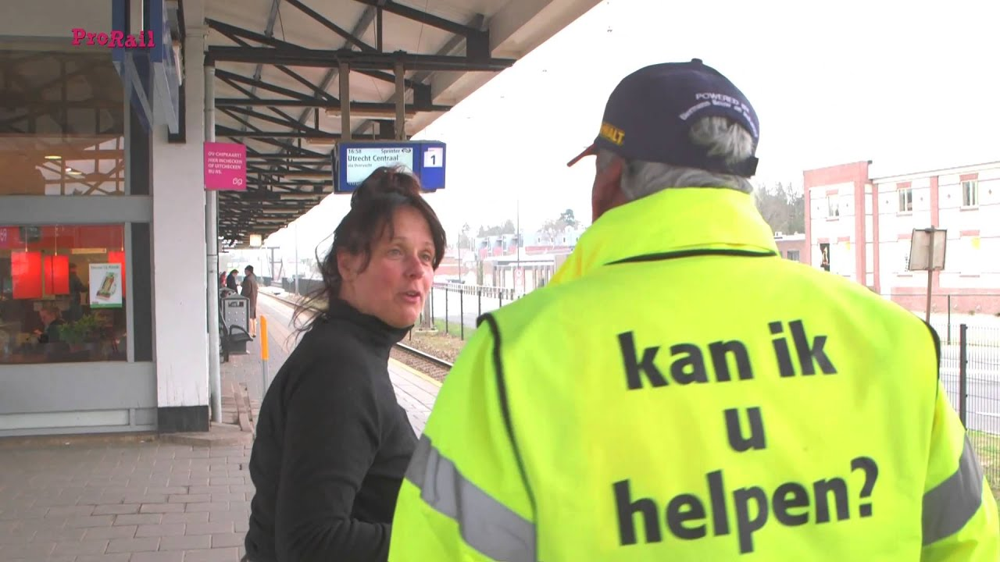
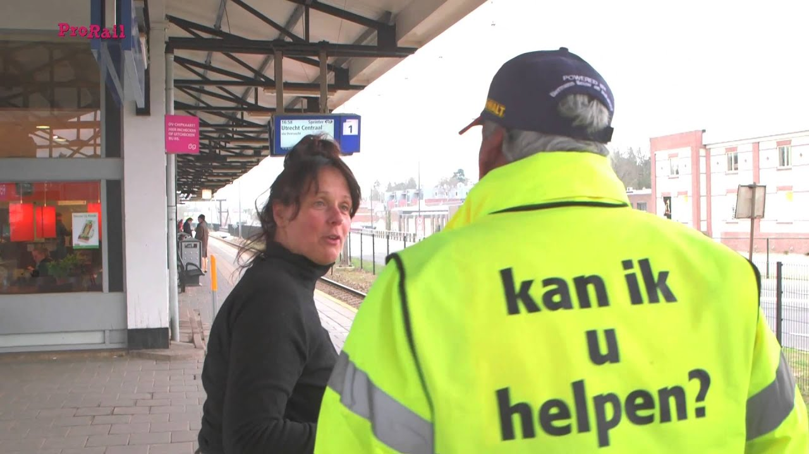

NL-Europa
Naar het Nederland van morgen
Politiek-Juridisch
indirecte of directe democratie? Om de uitdagingen van morgen te ondergaan hebben we bekwame mensen
nodig die kennis hebben in hun vakgebied, daarom kiezen wij voor een indirecte democratie met een
twist. Wij willen dat kiezers de mensen kiezen die ons lijden naar het Europa van de toekomst maar
wij willen wel dat de verkiesbare mensen alleen gekozen kunnen worden op basis van hun verleden en
kennis in hun vakgebied.
We willen een commissie aanstellen die kijkt of iemand verkiesbaar gesteld kan worden zodat er niet
gestemd kan worden op iemand die geen verstand heeft van politiek of hoe je een land moet leiden,
wij willen ook dat er opleidingen komen die je klaar kunnen stomen voor een carrière in de politiek,
dit plan kan ook de diversiteit bevorderen in de politiek doordat mensen uit alle lagen van de
samenleving de politiek in kunnen op basis van hun kennis en niet uit welk huis je geboren bent.
 

Zo ook de minister van defensie moet een oud leger commandant zijn zodat het leger geleid word
door een bekwaam iemand die ook verstand heeft van oorlog voeren en hoe je een land moet verdedigen.
Om de talloze crisissen op te lossen hebben we bekwame mensen nodig die radicale hervormingen
uitvoeren en daarom kiezen we voor een indirecte democratie. Als we zouden kiezen voor een directie
democratie krijg je altijd mensen die burgers tegen elkaar op zouden zetten en de macht willen
grijpen, dit kunnen wij daarom niet toestaan.
 

Onze partij is een links pan-Europese progressieve partij, wij staan voor een verenigd Europa dat
samenwerkt aan de problemen die wij in Nederland en in de wereld hebben. Linkse partijen staan voor
een overheid die de burger wilt helpen en ze staan voor een gelijkere welvaartsverdeling en willen
klimaatverandering aanpakken door verschillende hervormingen in het systeem.
Wij staan voor een verenigd Europa dat geeft om elke Europese burger en ook in Nederland. Wij willen
dat elke burger gelijk is en wij streven ernaar dat elke burger een vrij leven kan genieten. In
Nederland willen we dat aanpakken door woonwijken te diversifiëren zodat de diversen lagen in de
samenleving samenkomen en wij elkaar allemaal meer gaan accepteren voor wie wij zijn en onze
gelijkenissen maar ook verschillen te omarmen.
Wij staan voor een meer divers aanbod van woonhuizen in alle wijken van Nederland en Europa.
Onderzoek wees uit dat als je verschillende mensen met verschillende inkomens en levensovertuigingen
bij elkaar zet dat mensen andere beter gaan accepteren, dit concept moet de overheid gaan regelen en
wij willen niet dat particulieren en bedrijven dit concept moeten gaan uitvoeren omdat het plan dat
wij willen uitvoeren dan niet goed word uitgevoerd.
Wij willen gelijkheid ook bevorderen door de lage en middeninkomens minder te belasten en grootte
bedrijven zwaar te belasten, als we dit door heel Europa doen zullen bedrijven dit wel moeten
accepteren en zullen we moeten accepteren dat bedrijven in service staan van mensen en niet
andersom.